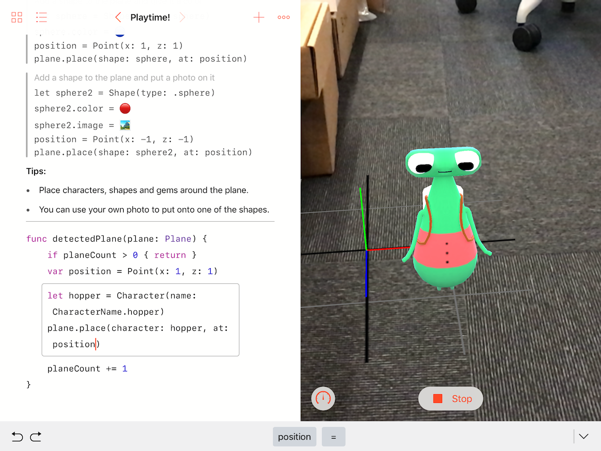
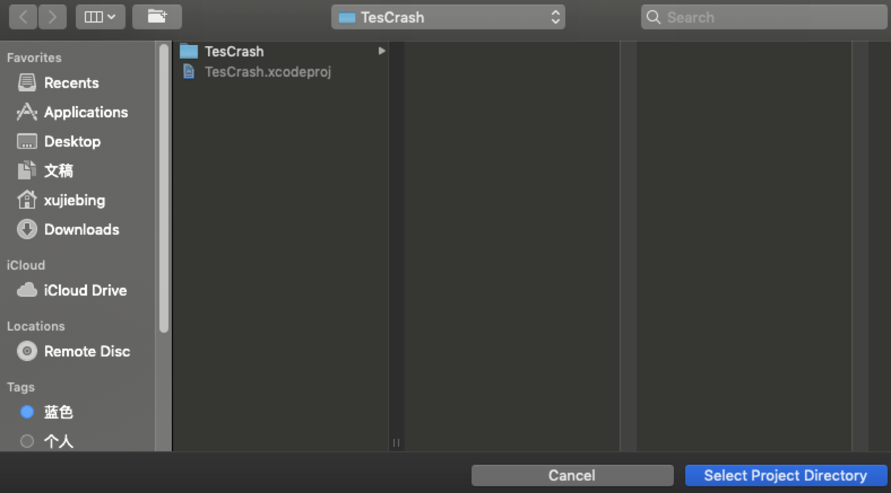

虽然动态链接器的实际应用能够帮助我们缩短App编译时间，但是每次修改代码之后还是需要重新启动App，再走一遍调试流程。对于我们开发人员来说，提高编译调试的速度就是提高生产力。那么，目前有哪些工具是可以实现动态调试的呢？
Swift Playground
Playground是 Xcode 里集成的一个能够快速、实时调试程序的工具，可以实现所见即所得的效果，如下图所示：

Flutter Hot Reload
Flutter 是 Google 开发的一个跨平台开发框架，调试也是快速实时的。官方的效果动画如下：

Injection for Xcode
Injection 的工具可以动态地将 Swift 或 Objective-C 的代码在已运行的程序中执行，以加快调试速度，同时保证程序不用重启。John Holdsworth 也提供了动画演示效果，如下：

Injection工作原理
- Injection 会监听源代码文件的变化，如果文件被改动了，Injection Server 就会执行 rebuildClass 重新进行编译、打包成动态库，也就是 .dylib 文件。编译、打包成动态库后使用 writeSting 方法通过 Socket 通知运行的 App。
- Server 会在后台发送和监听 Socket 消息，实现逻辑在 InjectionServer.mm 的 runInBackground 方法里。Client 也会开启一个后台去发送和监听 Socket 消息，实现逻辑在 InjectionClient.mm里的 runInBackground 方法里。
- Client 接收到消息后会调用 inject(tmpfile: String) 方法，运行时进行类的动态替换。inject(tmpfile: String) 方法的代码大部分都是做新类动态替换旧类。inject(tmpfile: String) 的入参 tmpfile 是动态库的文件路径，那么这个动态库是如何加载到可执行文件里的呢？具体的实现在 inject(tmpfile: String) 方法开始里。
- dlopen 会把 tmpfile 动态库文件载入运行的 App 里，返回指针 dl。接下来，dlsym 会得到 tmpfile 动态库的符号地址，然后就可以处理类的替换工作了。当类的方法都被替换后，我们就可以开始重新绘制界面了。整个过程无需重新编译和重启 App，至此使用动态库方式极速调试的目的就达成了。
InjectionIII使用方法
从AppStore下载
InjectionIII设置
AppDelegate.m打开你的源码，在
AppDelegate.m的didFinishLaunchingWithOptions方法添加一行代码：
1 | #if DEBUG |
设置
ViewController在需要修改界面的ViewController添加方法，所有修改控件的代码都写在这里面。
1 | - (void)injected { |
设置
InjectionIII打开
InjectionIII工具，选择Open Project，选择你的代码所在的路径，然后点击Select Project Directory保存。

注意：InjectionIII 的File Watcher选项要保持选中状态
运行项目
按照第4步选择完项目路径后，先在
Xcode Command+R运行一下你的项目，控制台提示如下信息，即表示InjectionIII连接成功，连接成功的话InjectionIII标志会由蓝变橙（可能不同InjectionIII版本颜色不太一样）。
控制台提示信息
连接成功后，就可以在第3步中的- (void)injected;方法中修改控件、添加控件了，修改完毕Command+S保存一下代码，立刻就在模拟器上显示修改的信息了。
需要注意的两点：
- InjectionIII工具只对模拟器有效，真机无效。
- 在
injected方法里面修改的代码，再次Command+R运行时不会起作用。因为代码里面只声明了injected方法，并没有去调用，所以不会生效；我们Command+S保存代码后生效，是因为在保存后通过InjectionIII工具读取injected方法里面修改的代码，“告诉”模拟器哪儿修改了，是InjectionIII起的作用。因此我们需要把修改的代码放到合适的位置，让程序一运行就会执行。